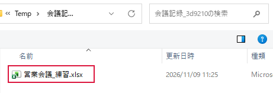

保存したファイルを探したい
さっき保存した
- Excelで［ファイル］→［開く］を選びます。
- ［最近使ったアイテム］から、保存したときの名前を探して開きます。
名前の一部を覚えている

- 保存先が分かる場合は Ctrl＋F12 を押し、そのフォルダーを開きます。右上の検索欄に名前の一部を入力して Enter を押します。
- 保存先が分からない場合は Windows キー＋E でエクスプローラーを開きます。［PC］を選び、右上の検索欄に名前の一部を入力して Enter を押します。
- 結果の名前と更新日時を確認し、目的のファイルをダブルクリックします。
できたか確認
画面上部の名前と議事録の日付が合えば、目的のファイルです。